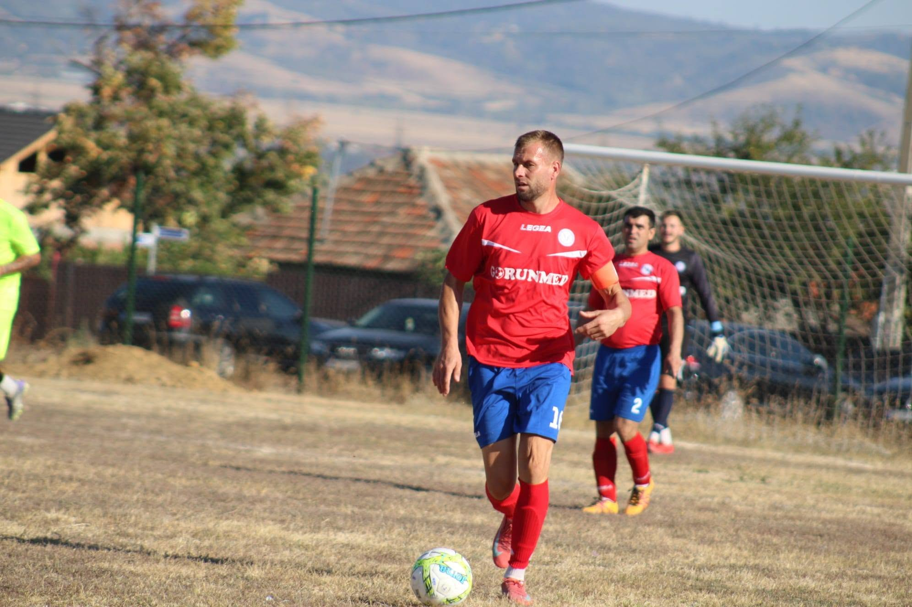

CS Sănătatea Breznița Ocol a obținut o victorie importantă în etapa a 7-a din Liga a IV-a Mehedinți, după ce a trecut cu 2-0 de formația ACS Luceafărul Drobeta. Prima repriză s-a încheiat fără goluri, iar gazdele au făcut diferența în partea a doua, când au accelerat și au decis soarta meciului.
🔥 Prima repriză: echilibru și 0-0 la pauză
Ambele echipe au intrat pe teren hotărâte să obțină un rezultat pozitiv. Jocul a fost echilibrat în prima parte, fără ca vreuna dintre formații să reușească să deschidă scorul, astfel că la pauză tabela arăta 0-0. Suspansul s-a păstrat până după reluare, când partida a căpătat o altă dinamică.
⚽ Dorin Petriș și Augustin Puțintelu, oamenii golurilor
În repriza secundă, CS Sănătatea Breznița Ocol a găsit drumul spre poartă și a făcut diferența pe tabela de marcaj. Dorin Petriș a punctat pentru gazde, iar Augustin Puțintelu a completat reușita echipei, stabilind rezultatul final de 2-0.
Două goluri marcate după pauză și niciun gol primit — CS Sănătatea Breznița Ocol a câștigat meritat partida cu ACS Luceafărul Drobeta.
⚽ Marcatorii CS Sănătatea Breznița Ocol

💪 Trei puncte care aduc moral și încredere
Cu o apărare care nu a cedat pe tot parcursul meciului și cu eficiență în repriza secundă, CS Sănătatea Breznița Ocol își trece în cont trei puncte importante. Victoria aduce moral și încredere echipei pentru următoarele confruntări din campionatul județean.
La final, tabela a confirmat succesul gazdelor: CS Sănătatea Breznița Ocol – ACS Luceafărul Drobeta 2-0 (0-0).
📌 Pe scurt
Competiția: Liga a IV-a Mehedinți, etapa a 7-a
Scor final: CS Sănătatea Breznița Ocol – ACS Luceafărul Drobeta 2-0 (0-0)
Marcatori: Dorin Petriș, Augustin Puțintelu
Pentru mai multe rezultate și noutăți din fotbalul județean, urmăriți secțiunea Sport de pe MehedintiAzi.ro și pagina de Facebook Mehedinți Azi.
Redactia MehedintiAzi.ro